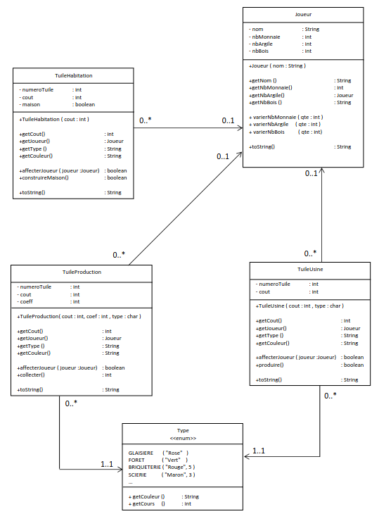

Compétences associées
Description
Le DS Machine N°3 : D'argile et de Bois était un DS dans lequel nous avions d'abord amélioré un diagramme de classe (Diagramme UML),
pour finalement l'implémenter sur une machine.
Le sujet était un jeu de plateau composé de tuiles qui pouvaient être achetées par les joueurs, avec certains types comme des tuiles usine qui servaient à transformer des matières premières en argent
ou même des tuiles production qui permettaient de produire de la matière première. Nous ne sommes pas allés plus loin que ça dans le jeu.
Le DS était en 2 parties :
Partie 1
Nous partions de ce diagramme de classe :

Et nous avons modifier pour enlever les répétitions et nous sommes arrivé à ceci :
Partie 2
La deuxième partie consistait à implémenter ce diagramme de classe sur une machine, en utilisant le langage de programmation Java.
dont voici un exemple :